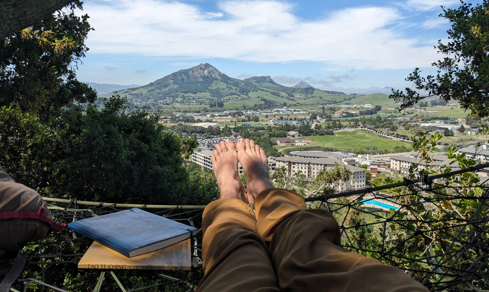
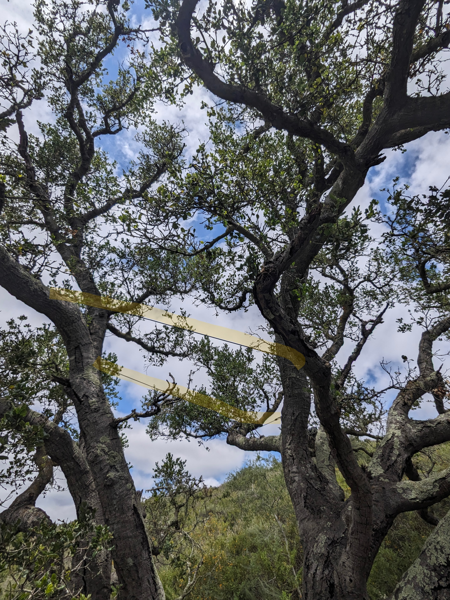

The Tree Net
While I was living in the on-campus second year apartments during my second year at SLO I was inspired to explore the hillside behind where I lived. There, about a 10 minute hike up the hill, I found a sad and dejected mess of rope in a beautiful oak tree overlooking the campus. Recognizing it as a tree net like the ones I'd discovered at UCSC, I set about repairing it with no experience whatsoever.
After completely disassembling and reassembling the net, I learned a few basic lessons. In order to build tension, you had to use strong clove hitches along the perimeter, ensuring that the rope would not come undone when taught, but also a knot that can be easily tied under tension. You have to wrap at each crossing of the rope as you weave, ensuring that any tension you create gets transfered to the whole net, without any sliding or shifting. In this way I tought myself the basics, and began learning the fundamentals for building a great net.

My First Net

While the first net had been greatly improved by my work, it did not feel entirely my own and was not particularly secluded (it soon became relatively well known). I enjoyed it for a while but soon craved a new challenge. After scouting about a hundred trees I bushwhacked my way to a majestic lone oak alive with bees, birds, and large beetles. I spent multiple days simply imagining and planning different net locations within the tree, running through weaknesses, material contraints, and creative workarouds. I sought advice from my climbing buddy Eric and we worked together to outline what we thought might just work, 50ft in the air.
Materials
For this project I knew I wanted high quality paracord and a strong outer border but I also wanted to keep it reasonably cheap. I found atwood rope which had great deals on utility cord and 550 paracord mystery boxes which were ideal for this project. I bought the 10lb mystery box of paracord for about $40 and 100ft of utility for $30. (Note: Future projects will use recycled climbing rope for its strength and economy)
The Build
I began by outlining the shape of the net, and being extremely careful to ensure that no part of the rope would choke the tree. Over the next two weeks I began to weave, using the excess utility cord as a sort of scaffolding, so I could walk out over the empty space above the ground and work above my head. Eventually, after inventing multiple methods to reinforce and extend the net, it reached the point where I could sit on it and work which greatly increased the progress. I added a patterned backrest and some other fun features like an entrance portal.

Updates
I have since added a journal and pens to the net so other adventurers can add their stories. I have also begun working on a Tree Net 101 course toward the back of the journal so others can learn to build safe and sustainable nets for everyone to enjoy. I recently scouted some new location within the Bishop Peak Open Space Preserve, which I hope to be awesome way to share this skill and inspire others to care for and appreciate the natural world.